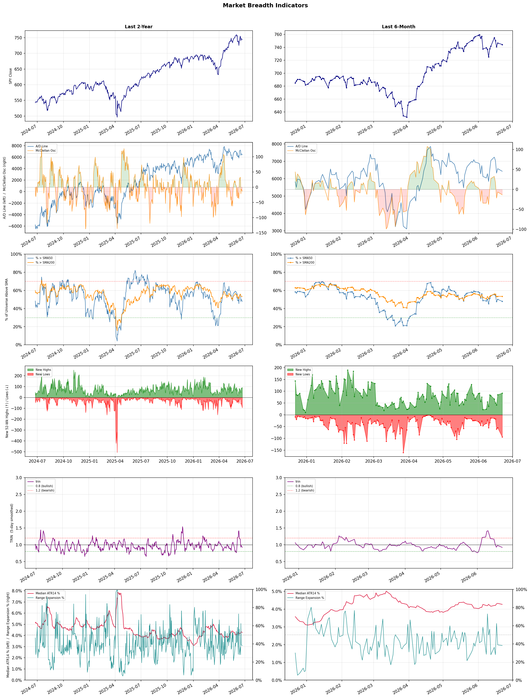

A daily market breadth and sector rotation report for active investors
| Item | Read |
|---|---|
| Regime downgraded | Selective Risk-On → Neutral |
| Regime | Neutral |
| Risk posture | Cautious |
| Universe | 1,346 stocks tracked · 92 new 52-week highs · 30 active swing setups |
| Breadth | only 47.9% of tracked stocks are above SMA50, new lows exceed new highs (94 vs 92), McClellan oscillator (breadth momentum) is negative at -13.6 |
| Leadership | Healthcare Plans, Semiconductor Equipment & Materials, and Electronic Components |
| Weakest groups | Financial Data & Stock Exchanges, Agricultural Inputs, and Oil & Gas E&P |
Use this report to prioritize research and chart review; validate entries, stops, liquidity, earnings, and risk before acting.
| Item | Read |
|---|---|
| Primary read | Neutral regime with Cautious risk posture. |
| Research queue | CLOV, OSCR, HUM, CNC, ALHC |
| Leadership focus | Healthcare Plans, Semiconductor Equipment & Materials, and Electronic Components |
| Caution list | Financial Data & Stock Exchanges, Agricultural Inputs, and Oil & Gas E&P |
| Review prompt | Check extension risk, chart location, fundamentals, valuation, and earnings before using any research row. |
| Item | Read |
|---|---|
| Primary read | 4 active risk warnings; use screen output as watchlist input only. |
| Bullish screens | CLOV, AMAT, COHU, ENTG, TTMI |
| Bearish screens | ORLY, INTR, PLTR, TUYA, WU |
| Alerts / levels | Automated trigger, stop, ATR, liquidity, reward/risk, and event-risk levels are pending future enrichment. |
| Review prompt | Open the linked chart, define trigger and invalidation, then check liquidity and event risk independently. |
Risk Posture: Cautious — screen backdrop is selective; prioritize research in top-ranked groups
Metric context: McClellan below -50 = elevated selling pressure; below -100 = washout territory. Range Expansion = share of stocks with daily range above their 20-day average. Signal Density = share of tracked names appearing in signal screens.
| Breadth Date | % > SMA50 | % > SMA200 | New Highs | New Lows | McClellan | Median Range | Avg Range | Median ATR14 | Range Expansion | Signal Density |
|---|---|---|---|---|---|---|---|---|---|---|
| 2026-06-22 | 47.9% | 53.4% | 92 | 94 | -13.6 | 3.4% | 4.2% | 4.3% | 38.2% | 9.3% |

Regime downgraded: Selective Risk-On → Neutral
Prior comparison date: June 18, 2026
| Metric | Prior | Current | Change |
|---|---|---|---|
| Regime | Selective Risk-On | Neutral | changed |
| Risk Posture | Selective | Cautious | changed |
| % > SMA50 | 50.2% | 47.9% | -2.3 pts |
| % > SMA200 | 53.6% | 53.4% | -0.2 pts |
| New Highs | 85 | 92 | +7 |
| New Lows | 55 | 94 | -39 |
Top-10 industries entering: Banks - Diversified. Top-10 industries leaving: Electrical Equipment & Parts. New multi-signal long setups: ADI, ALAB, APLE, BEAM, CLOV, COHU, DAL, DKS, ENTG, ETN. New multi-signal short setups: none.
| Status | Tickers | Read |
|---|---|---|
| Added | ADI, ALAB, APLE, BEAM, CLOV, COHU, DAL, DKS | New technical screen matches vs prior report. |
| Removed | ACMR, ARM, ASML, AVR, BFLY, BNS, CALY, CIFR | No longer present in today's technical screen matches. |
| Still Active | AMAT, BTSG, ESI, IBKR | Appeared in both current and prior reports. |
| Promoted | none | Model Screen Score improved by at least 15 points. |
| Downgraded | none | Model Screen Score declined by at least 15 points. |
| Direction | Industry | ETF | Prior Rank | Current Rank | Days | Rank Change |
|---|---|---|---|---|---|---|
| Rose | Building Products & Equipment | XHB | 91 | 20 | 28 | +71 |
| Rose | Airlines | N/A | 75 | 6 | 35 | +69 |
| Rose | Packaging & Containers | N/A | 93 | 31 | 42 | +62 |
| Rose | Diagnostics & Research | N/A | 74 | 12 | 42 | +62 |
| Rose | Copper | COPX | 76 | 15 | 14 | +61 |
Bull: The Building Products & Equipment sector is experiencing a rise in relative strength primarily due to a resurgence in the housing market, as indicated by headlines like "Is Lennar Finally Turning the Corner After Its Housing Slump?" and "How Is PulteGroup’s Stock Performance Compared to Other Homebuilder Stocks?" This suggests that major homebuilders are starting to recover, which can drive demand for building products. Additionally, the mention of rising mortgage rates in "What ITB Investors Need to Watch Before Mortgage Rates Spike Again" indicates that while rates are a concern, the overall market sentiment remains optimistic, potentially leading to increased construction activity and investment in building products.
Bear: While the headlines suggest a potential recovery in the housing market, they may be overly optimistic given the persistent challenges of rising mortgage rates and affordability issues that could dampen demand. Furthermore, the mention of a "resurgence" may not account for the cyclical nature of the housing market, which could lead to a short-lived uptick rather than sustained growth. Additionally, with increasing costs of materials and labor, homebuilders may face margin pressures that could hinder their ability to drive demand for building products, ultimately impacting the sector's performance.
Verdict: The Building Products & Equipment sector is likely experiencing a rise due to a rebound in the housing market, driven by improving sentiment among major homebuilders, which is expected to boost demand for building products. However, the key risk is the persistent challenge of rising mortgage rates and affordability issues, which could dampen consumer demand and pressure homebuilders' margins, potentially leading to a short-lived recovery rather than sustained growth. Investors should closely monitor mortgage rate trends and material cost fluctuations to gauge the sector's trajectory.
Sources: Yahoo Finance, Google News
Bull: The airline industry is experiencing rising relative strength primarily due to declining oil prices, which significantly lowers operational costs and enhances profitability for airlines, as highlighted by U.S. Global Investors' emphasis on sector strength amid falling oil prices. Additionally, positive sentiment from recent analyses, such as Zacks' recommendations for the best airline stocks to buy, indicates strong investor confidence in the sector's recovery and growth potential, despite recent profit warnings affecting some airlines. This combination of reduced fuel costs and bullish market sentiment positions the airline sector favorably compared to other industries.
Bear: While declining oil prices may temporarily reduce operational costs for airlines, the recent sector-wide profit warning indicates underlying vulnerabilities that cannot be overlooked. Increased competition, potential economic slowdowns, and rising labor costs could erode any benefits from lower fuel prices, suggesting that the current bullish sentiment may be overly optimistic and not reflective of the industry's long-term stability. Additionally, the reliance on a single factor like oil prices ignores other significant challenges, such as fluctuating demand and geopolitical risks, which can quickly undermine profitability.
Verdict: The airline industry's rising relative strength is primarily driven by declining oil prices, which lower operational costs and enhance profitability, fostering positive investor sentiment. However, key risks remain, including sector-wide profit warnings, increased competition, and rising labor costs, which could undermine the benefits of lower fuel prices and indicate potential vulnerabilities in the industry's long-term stability. Investors should monitor these factors closely to assess the sustainability of the current bullish outlook.
Sources: Google News
Bull: The Packaging & Containers industry is experiencing a rising relative strength primarily due to a sector-wide rally, as evidenced by Silgan Holdings' notable 5.1% jump, indicating investor confidence despite broader challenges. While the Iran war has pressured energy costs and negatively impacted some packaging stocks, the resilience shown by select companies suggests a potential for recovery driven by ongoing demand for sustainable packaging solutions and innovation within the sector, as highlighted in recent analyses. This combination of sector resilience and favorable market dynamics positions the industry for bullish momentum moving forward.
Bear: While the recent rally in packaging stocks, such as Silgan Holdings, may suggest investor confidence, it is crucial to recognize that this is largely a reaction to short-term market dynamics rather than a sustainable recovery. The ongoing Iran war is driving up energy costs, which can significantly impact margins for packaging companies, especially those reliant on fossil fuels for production. Additionally, the broader economic uncertainty and potential supply chain disruptions could hinder long-term growth prospects, making the current optimism appear overly optimistic and potentially misplaced.
Verdict: The Packaging & Containers industry is experiencing a rise in relative strength due to increased investor confidence driven by a sector-wide rally and a growing demand for sustainable packaging solutions. However, key risks remain, particularly the impact of rising energy costs from the ongoing Iran war, which could squeeze margins and hinder long-term growth prospects. Investors should closely monitor energy price trends and geopolitical developments to assess the sustainability of this bullish momentum.
Sources: Google News
Bull: The Diagnostics & Research sector is experiencing a rise in relative strength primarily due to increasing investor confidence in healthcare stocks, as highlighted by positive analyses from sources like Morningstar and DirectorsTalk, which emphasize compelling growth potential within the sector. Additionally, the integration of AI in healthcare, as noted by U.S. News, is driving innovation and efficiency, further attracting investment and bolstering stock performance, as evidenced by the sector-wide rally that benefited companies like Waters.
Bear: While the Diagnostics & Research sector may currently exhibit rising relative strength and positive sentiment, this could be misleading as it often reflects short-term market trends rather than sustainable growth. The reliance on AI integration, while promising, poses significant risks including regulatory hurdles, data privacy concerns, and the potential for overvaluation of tech-driven stocks. Additionally, the broader economic environment, including rising interest rates and potential healthcare policy changes, could dampen investor enthusiasm and lead to a correction in the sector.
Verdict: The Diagnostics & Research sector's rise is fundamentally driven by heightened investor confidence in healthcare stocks, fueled by strong growth potential and the transformative impact of AI integration, which enhances innovation and operational efficiency. However, investors should remain cautious of key risks, including regulatory challenges and potential overvaluation of tech-driven companies, which could lead to a market correction if broader economic conditions, such as rising interest rates or healthcare policy shifts, negatively impact sentiment.
Sources: Google News
Bull: Copper is experiencing a rising relative strength primarily due to its critical role in the transition to green energy and infrastructure resilience, as highlighted by headlines discussing the "Grid Resilience Boom" and the growing importance of copper in various sectors, including AI and manufacturing. Additionally, the impressive performance of copper ETFs, with one returning 156% in a year while offering a substantial 9.7% yield, indicates strong investor confidence in copper's demand trajectory, driven by ongoing industrial applications and the need for robust materials in emerging technologies.
Bear: While the bullish narrative around copper's role in green energy and technological advancements is compelling, it overlooks significant headwinds that could dampen demand. A potential global manufacturing slowdown, as suggested in recent headlines, could lead to reduced industrial activity, directly impacting copper consumption. Additionally, the recent surge in copper prices may have already priced in much of the anticipated demand, leaving little room for further appreciation, especially if economic conditions deteriorate or alternative materials gain traction in key applications.
Verdict: Copper's rising relative strength is fundamentally driven by its essential role in the green energy transition and the increasing demand from sectors like AI and manufacturing, which is reflected in strong investor confidence and robust ETF performance. However, the key risk lies in a potential global manufacturing slowdown that could significantly reduce copper consumption, suggesting that investors should closely monitor economic indicators and industry trends to gauge future demand dynamics.
Sources: Yahoo Finance, Google News
| Direction | Industry | ETF | Prior Rank | Current Rank | Days | Rank Change |
|---|---|---|---|---|---|---|
| Fell | Chemicals | N/A | 11 | 82 | 35 | -71 |
| Fell | Uranium | URA | 11 | 80 | 42 | -69 |
| Fell | Oil & Gas Integrated | XLE | 8 | 77 | 35 | -69 |
| Fell | Oil & Gas E&P | XOP | 17 | 86 | 35 | -69 |
| Fell | Oil & Gas Equipment & Services | XES | 3 | 70 | 35 | -67 |
Bear: While the bull analyst points to macroeconomic pressures and geopolitical factors as primary challenges, it's crucial to recognize that the Chemicals sector is facing fundamental issues such as overcapacity and declining margins, particularly as competition intensifies from low-cost producers like China's coal chemicals sector. Additionally, the recent headlines indicate a potential disconnect between the broader materials sector's performance and the Chemicals industry, suggesting that any short-term gains in the sector may not be sustainable, as underlying demand remains weak and companies struggle to innovate or adapt to changing market conditions.
Bull: The Chemicals sector is experiencing a decline in relative strength primarily due to macroeconomic pressures and geopolitical factors impacting demand and supply dynamics. The headlines indicate that while the broader basic materials sector is soaring, specific challenges in the Chemicals industry, such as increased competition from China's coal chemicals sector amidst geopolitical tensions (as noted in the Reuters article), are creating headwinds. Additionally, concerns about underperformance relative to the broader market, as highlighted by Yahoo Finance, suggest that investor sentiment may be cautious, further contributing to the sector's relative weakness.
Verdict: The Chemicals sector's decline is fundamentally driven by overcapacity and declining margins, exacerbated by intense competition from low-cost producers like China's coal chemicals sector, which is further straining profitability. While macroeconomic pressures and geopolitical factors are significant, the key risk lies in the sector's inability to innovate or adapt to changing market conditions, suggesting that any short-term recovery may be unsustainable without addressing these fundamental issues. Investors should closely monitor capacity utilization rates and pricing trends to gauge the sector's potential for recovery.
Sources: Google News
Bear: While the bull analyst attributes the recent decline in uranium stocks to profit-taking and temporary valuation scrutiny, a more fundamental concern lies in the long-term viability and public acceptance of nuclear energy amidst rising competition from renewable sources and evolving energy policies. Additionally, geopolitical risks, particularly in regions with significant uranium production, could exacerbate supply chain vulnerabilities, making investments in this sector riskier than they appear, especially as the narrative around nuclear energy may not translate into sustained demand or regulatory support.
Bull: The recent decline in the relative strength of uranium stocks, as indicated by the ETF URA, can be attributed to a combination of profit-taking after a significant rally (57% over the past year) and heightened scrutiny of valuations following a sharp 17% drop in a month. Additionally, the headlines suggest that geopolitical risks and the emerging demand for nuclear energy due to AI and data center energy needs are causing uncertainty, leading investors to weigh the sector's outlook more cautiously, as seen in the mixed performance of stocks like Berkeley Energia (ASX:BKY).
Verdict: The recent decline in uranium stocks appears primarily driven by profit-taking after a substantial rally and investor caution regarding valuations amid geopolitical uncertainties. However, the key risk highlighted by the bear thesis is the long-term viability of nuclear energy, as increasing competition from renewables and potential regulatory challenges could undermine sustained demand and market confidence in the sector. Investors should closely monitor these dynamics and consider diversifying their portfolios to mitigate exposure to potential volatility in uranium stocks.
Sources: Yahoo Finance, Google News
Bear: While the bull analyst attributes the decline in relative strength to broader market volatility, it is essential to recognize that the oil and gas sector is facing fundamental challenges that could undermine its long-term viability. Factors such as increasing regulatory scrutiny, a global shift toward renewable energy sources, and potential supply chain disruptions due to geopolitical tensions are likely to weigh heavily on the sector. Furthermore, the recent uptick in energy stocks may be a temporary reaction rather than a sustainable trend, as underlying demand dynamics and investor sentiment remain fragile in the face of these significant headwinds.
Bull: The Oil & Gas Integrated sector is likely experiencing a decline in relative strength due to broader market volatility and mixed performance across U.S. equities, as indicated by the headlines noting that "Exchange-Traded Funds, US Equities Mixed After Midday." Additionally, the focus on upcoming midterm elections and potential regulatory changes could be creating uncertainty, as suggested by the headlines discussing strategies for navigating the 2026 election cycle. This environment may lead investors to be cautious about energy stocks despite recent positive movements, such as "Energy Stocks Rise Late Afternoon."
Verdict: The Oil & Gas Integrated sector's decline appears driven by a combination of broader market volatility and fundamental challenges, including increasing regulatory scrutiny and a global shift towards renewable energy. While recent gains in energy stocks may suggest temporary optimism, the key risk lies in the potential for sustained supply chain disruptions and weakening demand dynamics, which could significantly undermine long-term sector viability. Investors should remain cautious and consider diversifying their portfolios to mitigate exposure to these risks.
Sources: Yahoo Finance, Google News
Bear: While the bull analyst points to volatility and geopolitical tensions as short-term factors, the persistent decline in relative strength for the Oil & Gas E&P sector suggests deeper, structural issues at play. The recent spike in crude oil prices may indeed attract short-term interest, but it also raises significant concerns about demand destruction, particularly as global economies face potential recessions and inflationary pressures, which could lead to a prolonged downturn in consumption. Furthermore, the rising focus on renewable energy and regulatory pressures could further erode the long-term viability of traditional oil and gas investments, making the current enthusiasm for energy ETFs appear overly optimistic.
Bull: The falling relative strength of the Oil & Gas E&P sector can be attributed to recent volatility in crude oil prices, highlighted by the $114 spike, which, while initially beneficial, has led to concerns over demand destruction amid economic uncertainty. Additionally, the headlines indicate supply constraints and geopolitical tensions, such as the Hormuz crisis, which may create short-term instability, causing investors to reassess their positions in the sector despite its potential for gains in the longer term.
Verdict: The falling relative strength of the Oil & Gas E&P sector can be attributed to recent volatility in crude oil prices, highlighted by the $114 spike, which, while initially beneficial, has led to concerns over demand destruction amid economic uncertainty. Additionally, the headlines indicate supply constraints and geopolitical tensions, such as the Hormuz crisis, which may create short-term instability, causing investors to reassess their positions in the sector despite its potential for gains in the longer term.
Sources: Yahoo Finance, Google News
Bear: While the bull analyst points to broader market concerns and a shift towards alternative energy as factors affecting the Oil & Gas Equipment & Services sector, it is essential to recognize that the volatility in oil prices can also lead to increased capital expenditures by oil companies seeking to maximize production during price surges. Additionally, the recent headlines indicating a focus on indirect investment strategies may reflect a temporary market sentiment rather than a long-term trend, suggesting that the sector could rebound as demand for oil and gas services remains strong in the face of geopolitical tensions and supply chain disruptions. Therefore, the bearish outlook may overlook potential catalysts for recovery in the sector.
Bull: The Oil & Gas Equipment & Services sector, represented by the SPDR S&P Oil & Gas Equipment & Services ETF (XES), is likely experiencing a decline in relative strength due to broader market concerns about volatility in oil prices and potential overcapacity in the industry, as suggested by headlines discussing the surge in oil prices and the need for indirect investment strategies. Additionally, the focus on alternative energy sources and the evolving landscape of energy investments, as highlighted by mentions of top-performing stocks and ETFs, may be diverting attention and capital away from traditional oil and gas services, impacting the sector's performance.
Verdict: The Oil & Gas Equipment & Services sector is likely experiencing a decline due to heightened volatility in oil prices and a market shift towards alternative energy investments, which are diverting capital away from traditional oil services. However, a key risk to this bearish outlook is the potential for increased capital expenditures by oil companies in response to price surges, which could drive demand for equipment and services, providing a catalyst for recovery. Investors should monitor geopolitical tensions and supply chain disruptions, as these factors may influence the sector's performance in the near term.
Sources: Yahoo Finance, Google News
| Industry | Rank | ETF | 7d | 14d | 28d | 42d | Chg 42d | Size | 20D | 60D | Composite | Active Setups |
|---|---|---|---|---|---|---|---|---|---|---|---|---|
| Healthcare Plans | 1 | IHF | 5 | 6 | 5 | 6 | +5 | 10 | 15.3% | 71.5% | 0.959 | 0 |
| Semiconductor Equipment & Materials | 2 | SOXX | 2 | 21 | 10 | 2 | 0 | 17 | 24.6% | 69.4% | 0.948 | 0 |
| Electronic Components | 3 | XLK | 3 | 3 | 8 | 5 | +2 | 10 | 14.6% | 64.3% | 0.946 | 0 |
| Computer Hardware | 4 | XLK | 1 | 2 | 1 | 3 | -1 | 15 | 21.1% | 83.4% | 0.931 | 1 |
| Semiconductors | 5 | SOXX | 4 | 4 | 2 | 1 | -4 | 38 | 15.3% | 110.6% | 0.931 | 1 |
| Airlines | 6 | N/A | 6 | 27 | 42 | 55 | +49 | 8 | 19.3% | 32.5% | 0.917 | 1 |
| REIT - Hotel & Motel | 7 | XLRE | 8 | 5 | 9 | 16 | +9 | 9 | 15.0% | 33.6% | 0.901 | 0 |
| Rental & Leasing Services | 8 | N/A | 31 | 20 | 13 | 18 | +10 | 6 | 13.4% | 31.8% | 0.887 | 0 |
| REIT - Office | 9 | XLRE | 7 | 9 | 20 | 22 | +13 | 8 | 11.9% | 44.5% | 0.871 | 0 |
| Banks - Diversified | 10 | N/A | 12 | 14 | 19 | 45 | +35 | 16 | 9.1% | 22.2% | 0.859 | 0 |
Rank columns (7d–42d) show the industry's rank that many trading days ago — lower is stronger. Chg 42d = rank change vs 42 trading days ago — positive means the industry moved up. 20D and 60D are the mean stock return within the industry over that period. Active Setups: count of today's swing-trade candidates from this industry appearing across all signal screens.
| Industry | Rank | ETF | 7d | 14d | 28d | 42d | Chg 42d | Size | 20D | 60D | Composite | Active Setups |
|---|---|---|---|---|---|---|---|---|---|---|---|---|
| Financial Data & Stock Exchanges | 88 | N/A | 87 | 92 | 71 | 60 | -28 | 7 | -12.6% | -8.0% | 0.032 | 0 |
| Agricultural Inputs | 87 | N/A | 88 | 94 | 64 | 76 | -11 | 5 | -8.3% | -17.3% | 0.110 | 0 |
| Oil & Gas E&P | 86 | XOP | 86 | 41 | 40 | 57 | -29 | 26 | -11.9% | -15.8% | 0.127 | 0 |
| Gold | 85 | GDX | 83 | 96 | 92 | 63 | -22 | 27 | -7.7% | -7.0% | 0.139 | 1 |
| Auto Manufacturers | 84 | N/A | 85 | 62 | 73 | 90 | +6 | 10 | -6.3% | -9.7% | 0.174 | 1 |
| Telecom Services | 83 | N/A | 66 | 75 | 61 | 65 | -18 | 20 | -8.2% | -6.3% | 0.177 | 0 |
| Chemicals | 82 | N/A | 69 | 89 | 44 | 28 | -54 | 8 | -7.5% | -10.5% | 0.193 | 0 |
| Packaged Foods | 81 | XLP | 77 | 90 | 97 | 97 | +16 | 20 | -2.0% | -11.2% | 0.199 | 0 |
| Uranium | 80 | URA | 84 | 95 | 95 | 11 | -69 | 6 | -4.3% | -9.3% | 0.201 | 0 |
| Real Estate Services | 79 | N/A | 74 | 87 | 85 | 40 | -39 | 10 | -3.0% | -5.4% | 0.210 | 0 |
Rank columns (7d–42d) show the industry's rank that many trading days ago — lower is stronger. Chg 42d = rank change vs 42 trading days ago — positive means the industry moved up. 20D and 60D are the mean stock return within the industry over that period. Active Setups: count of today's swing-trade candidates from this industry appearing across all signal screens.
These are research candidates from top-ranked stocks, capped at five names per industry to avoid over-concentration. Returns shown (60D, 120D, 250D) are historical — they reflect where prices have already moved, not forward expectations. Extension Risk flags names that may require extra patience or a better entry point. They are not buy signals.
Chart: TV = TradingView chart (opens in browser); PDF = local chart file (if downloaded).
| Ticker | Name | Industry | Industry Rank | Market Cap | 60D Hist | 120D Hist | 250D Hist | Extension Risk | Research Reason | Chart |
|---|---|---|---|---|---|---|---|---|---|---|
| CLOV | Clover Health | Healthcare Plans | 1 | N/A | 182.4% | 104.8% | 81.6% | Very extended | Top-ranked in industry; very extended | TV |
| OSCR | Oscar Health | Healthcare Plans | 1 | N/A | 133.7% | 91.4% | 39.8% | Very extended | Top-ranked in industry; very extended | TV |
| HUM | Humana | Healthcare Plans | 1 | N/A | 107.0% | 39.4% | 53.7% | Very extended | Top-ranked in industry; very extended | TV |
| CNC | Centene | Healthcare Plans | 1 | N/A | 94.6% | 57.2% | 19.3% | Extended | Top-ranked in industry; extended | TV |
| ALHC | Alignment Healthcare | Healthcare Plans | 1 | N/A | 21.1% | 13.4% | 52.4% | Constructive | Top-ranked in industry | TV |
| ACMR | ACM Research | Semiconductor Equipment & Materials | 2 | N/A | 126.1% | 154.0% | 318.0% | Very extended | Top-ranked in industry; very extended | TV |
| COHU | Cohu Inc | Semiconductor Equipment & Materials | 2 | N/A | 119.5% | 198.3% | 279.4% | Very extended | Top-ranked in industry; very extended | TV |
| AMKR | Amkor Technology | Semiconductor Equipment & Materials | 2 | N/A | 87.4% | 130.5% | 361.7% | Extended | Top-ranked in industry; extended | TV |
| KLAC | KLA Corp | Semiconductor Equipment & Materials | 2 | N/A | 74.3% | 110.3% | 214.3% | Extended | Top-ranked in industry; extended | TV |
| AMAT | Applied Materials | Semiconductor Equipment & Materials | 2 | N/A | 73.3% | 144.4% | 272.3% | Extended | Top-ranked in industry; extended | TV |
| OUST | Ouster | Electronic Components | 3 | N/A | 135.8% | 117.0% | 101.2% | Very extended | Top-ranked in industry; very extended | TV |
| FLEX | Flex Ltd | Electronic Components | 3 | N/A | 122.5% | 146.0% | 236.2% | Very extended | Top-ranked in industry; very extended | TV |
| TTMI | TTM Technologies | Electronic Components | 3 | N/A | 105.1% | 208.8% | 499.4% | Very extended | Top-ranked in industry; very extended | TV |
| RAL | Ralliant | Electronic Components | 3 | N/A | 58.3% | 31.5% | 42.6% | Extended | Top-ranked in industry; extended | TV |
| APH | Amphenol | Electronic Components | 3 | N/A | 28.9% | 20.8% | 74.2% | Constructive | Top-ranked in industry | TV |
| SNDK | SanDisk | Computer Hardware | 4 | N/A | 235.4% | 809.3% | 4742.9% | Very extended | Top-ranked in industry; very extended | TV |
| STX | Seagate Technology | Computer Hardware | 4 | N/A | 164.8% | 282.2% | 722.1% | Very extended | Top-ranked in industry; very extended | TV |
| WDC | Western Digital | Computer Hardware | 4 | N/A | 147.4% | 303.6% | 1113.3% | Very extended | Top-ranked in industry; very extended | TV |
| DELL | Dell Technologies | Computer Hardware | 4 | N/A | 127.5% | 224.0% | 254.8% | Very extended | Top-ranked in industry; very extended | TV |
| UMAC | Unusual Machines | Computer Hardware | 4 | N/A | 51.9% | 84.8% | 176.6% | Extended | Top-ranked in industry; extended | TV |
These are technical screen matches from existing signal files. They are not trade recommendations. Trigger, stop, ATR, liquidity, reward/risk, and event risk still require separate validation until those inputs are available.
Model Screen Score is weighted by signal count, industry rank, freshness, and setup type. It is not a probability of profit, expected return, or suitability rating. Industry cap: max 3 candidates per industry.
Signal glossary: Momentum Pullback = stock in an uptrend that has pulled back 10–30% and shows re-entry conditions. MA Compression = short- and long-term moving averages converging, often preceding a directional move. Three-Day Up/Down = three consecutive closes in the same direction. New 52Wk High/Low = price reached a new annual extreme.
Chart: TV = TradingView chart (opens in browser); PDF = local chart file (if downloaded).
| Ticker | Industry | Setups | Close | Industry Rank | Signal Count | Model Screen Score | Reason | Chart |
|---|---|---|---|---|---|---|---|---|
| CLOV | Healthcare Plans | New 52Wk High; Three-Day Up | 5.14 | 1 | 2 | 100 | Multi-signal; top industry breakout | TV |
| AMAT | Semiconductor Equipment & Materials | New 52Wk High; Three-Day Up | 640.18 | 2 | 2 | 100 | Multi-signal; top industry breakout | TV |
| COHU | Semiconductor Equipment & Materials | New 52Wk High; Three-Day Up | 70.07 | 2 | 2 | 100 | Multi-signal; top industry breakout | TV |
| ENTG | Semiconductor Equipment & Materials | New 52Wk High; Three-Day Up | 184.00 | 2 | 2 | 100 | Multi-signal; top industry breakout | TV |
| TTMI | Electronic Components | New 52Wk High; Three-Day Up | 221.47 | 3 | 2 | 100 | Multi-signal; top industry breakout | TV |
| SNDK | Computer Hardware | New 52Wk High; Three-Day Up | 2273.73 | 4 | 2 | 93 | Multi-signal; top industry breakout | TV |
| ADI | Semiconductors | New 52Wk High; Three-Day Up | 445.48 | 5 | 2 | 93 | Multi-signal; top industry breakout | TV |
| ALAB | Semiconductors | New 52Wk High; Three-Day Up | 439.66 | 5 | 2 | 93 | Multi-signal; top industry breakout | TV |
| DAL | Airlines | New 52Wk High; Three-Day Up | 85.92 | 6 | 2 | 93 | Multi-signal; top industry breakout | TV |
| APLE | REIT - Hotel & Motel | New 52Wk High; Three-Day Up | 16.61 | 7 | 2 | 93 | Multi-signal; top industry breakout | TV |
| HST | REIT - Hotel & Motel | New 52Wk High; Three-Day Up | 25.13 | 7 | 2 | 93 | Multi-signal; top industry breakout | TV |
| UBS | Banks - Diversified | New 52Wk High; Three-Day Up | 51.14 | 10 | 2 | 85 | Multi-signal; top industry breakout | TV |
| NVT | Electrical Equipment & Parts | New 52Wk High; Three-Day Up | 184.34 | 11 | 2 | 85 | Multi-signal; new-high strength | TV |
| BEAM | Biotechnology | New 52Wk High; Three-Day Up | 35.53 | 13 | 2 | 85 | Multi-signal; new-high strength | TV |
| IMVT | Biotechnology | New 52Wk High; Three-Day Up | 38.10 | 13 | 2 | 85 | Multi-signal; new-high strength | TV |
| RLAY | Biotechnology | New 52Wk High; Three-Day Up | 17.28 | 13 | 2 | 85 | Multi-signal; new-high strength | TV |
| KEYS | Scientific & Technical Instruments | New 52Wk High; Three-Day Up | 373.34 | 14 | 2 | 85 | Multi-signal; new-high strength | TV |
| BTSG | Health Information Services | New 52Wk High; Three-Day Up | 67.20 | 16 | 2 | 77 | Multi-signal; new-high strength | TV |
| LFST | Medical Care Facilities | New 52Wk High; Three-Day Up | 9.20 | 22 | 2 | 77 | Multi-signal; new-high strength | TV |
| IBKR | Capital Markets | New 52Wk High; Three-Day Up | 96.82 | 24 | 2 | 77 | Multi-signal; new-high strength | TV |
| RIOT | Capital Markets | New 52Wk High; Three-Day Up | 28.63 | 24 | 2 | 77 | Multi-signal; new-high strength | TV |
| LTH | Leisure | New 52Wk High; Three-Day Up | 37.33 | 26 | 2 | 70 | Multi-signal; new-high strength | TV |
| ESI | Specialty Chemicals | New 52Wk High; Three-Day Up | 49.09 | 39 | 2 | 70 | Multi-signal; new-high strength | TV |
| ETN | Specialty Industrial Machinery | New 52Wk High; Three-Day Up | 435.78 | 47 | 2 | 65 | Multi-signal; new-high strength | TV |
| DKS | Specialty Retail | New 52Wk High; Three-Day Up | 238.57 | 53 | 2 | 65 | Multi-signal; new-high strength | TV |
Bearish setups — stocks making new lows or showing persistent downside patterns. Validate carefully before acting.
| Ticker | Industry | Setups | Close | Industry Rank | Signal Count | Model Screen Score | Reason | Chart |
|---|---|---|---|---|---|---|---|---|
| ORLY | Auto Parts | New 52Wk Low; Three-Day Down | 85.63 | 23 | 2 | 47 | Multi-signal; new-low weakness | TV |
| INTR | Banks - Regional | New 52Wk Low; Three-Day Down | 5.39 | 25 | 2 | 47 | Multi-signal; new-low weakness | TV |
| PLTR | Software - Infrastructure | New 52Wk Low; Three-Day Down | 119.50 | 32 | 2 | 40 | Multi-signal; new-low weakness | TV |
| TUYA | Software - Infrastructure | New 52Wk Low; Three-Day Down | 1.84 | 32 | 2 | 40 | Multi-signal; new-low weakness | TV |
| WU | Credit Services | New 52Wk Low; Three-Day Down | 7.09 | 48 | 2 | 35 | Multi-signal; new-low weakness | TV |
How To Use This Report
| Use | Purpose |
|---|---|
| Market map | Start with breadth, regime, risk warnings, and what changed since the prior report. |
| Industry scan | Use leading, deteriorating, rising, and declining industries to focus research. |
| Research queue | Treat long-term candidates as names for deeper fundamental, valuation, and chart review. |
| Technical review | Treat bullish and bearish screen matches as watchlist inputs that require independent trigger, stop, liquidity, and event-risk checks. |
| Source follow-up | Use chart links and source files to verify raw inputs before relying on any row. |
What This Report Is Not
| Not | Meaning |
|---|---|
| Investment advice | The report does not evaluate personal objectives, risk tolerance, tax situation, account type, or suitability. |
| Buy/sell recommendation | Named tickers are research candidates or screen matches, not recommendations to transact. |
| Price target | The report does not provide fair value estimates, targets, or expected returns. |
| Trade plan | Trigger, stop, sizing, reward/risk, liquidity, and event-risk review remain separate user work. |
| Performance claim | Model Screen Score is not validated historical performance or a forecast of future results. |
| Item | Note |
|---|---|
| Version | Daily Report Methodology v1 |
| Model Screen Score | Screen-fit rank based on signal count, industry rank, freshness, and setup type. |
| Not predictive proof | The score is not expected return, probability of profit, historical validation, or suitability analysis. |
| Industry ranks | Composite industry ranks use existing daily ranking outputs and historical rank columns when available. |
| Research candidates | Long-term rows are research candidates from ranked stocks and leading industries, with historical returns labeled as historical only. |
| Technical matches | Bullish and bearish rows are screen matches requiring independent chart, trigger, stop, liquidity, and event-risk review. |
| Source | Status | Rows | Path |
|---|---|---|---|
| Market breadth | present | 1253 | breadth_20260622.csv |
| Industry composite rankings | present | 88 | all_industry_composite_20260622.csv |
| Top ranked stocks | present | 137 | top_ranked_composite_20260622.csv |
| All ranked stocks | present | 1346 | all_stocks_composite_sorted_20260622.csv |
| Top momentum pullbacks | present | 1497 | top_momentum_pullbacks_20260622.csv |
| MA compression | present | 1497 | ma_compression_stocks_20260622.csv |
| Three-day up/down | present | 258 | three_day_up_down_stocks_20260622.csv |
| New 52-week members | present | 186 | breadth_new_52wk_members_20260622.csv |
This report is generated from automated technical screens and is for informational and research purposes only. It is not investment advice, a solicitation, or a recommendation to buy or sell any security. Past performance is not indicative of future results. You are solely responsible for your own investment decisions. Consult a licensed financial advisor before acting on any information herein.